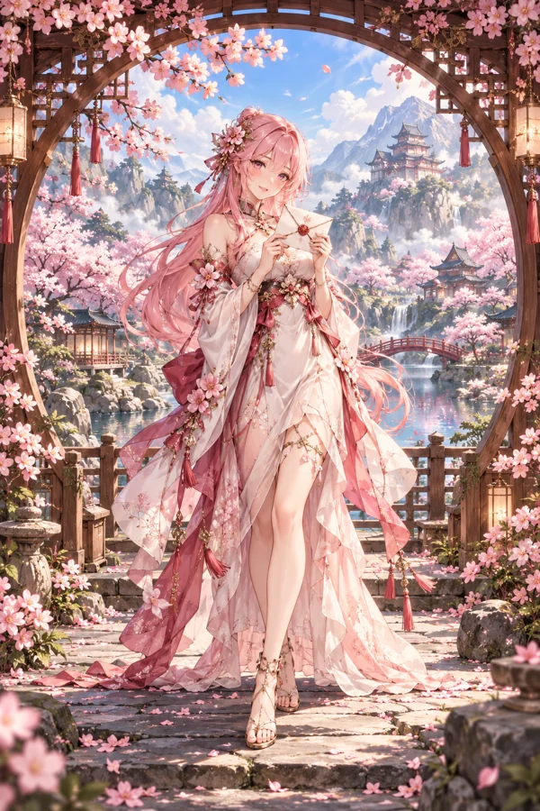
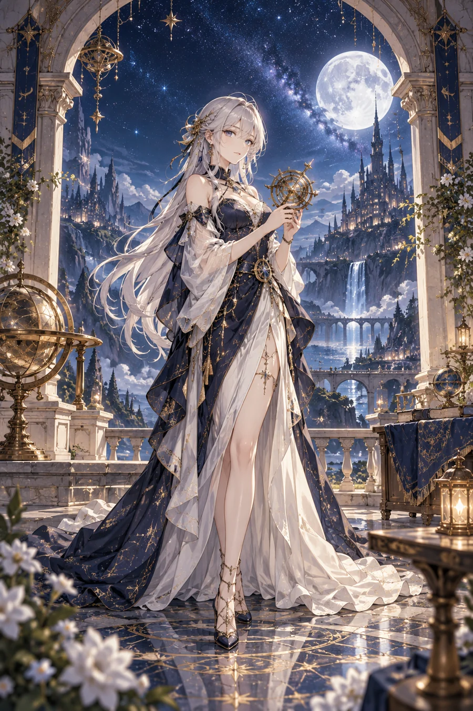
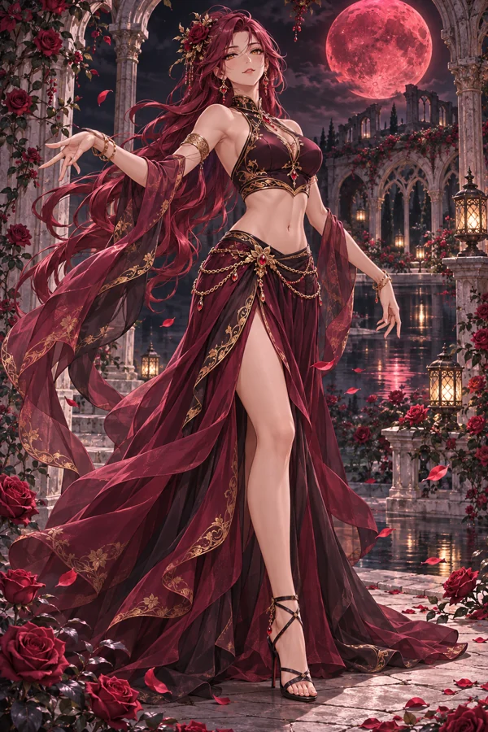

Some things
deserve to
be kept.
Your characters. Your memories. Your little universe.
Turn what you love into cards worth holding on to.



A collection
that feels like you.
Give a favorite illustration a new dimension. Save a small moment. Wrap a few cards into a gift for someone who gets it.
- A little tilt. A little magic.
- Enjoy layered depth, foil and pearlescent finishes, or two images that change as you tilt your phone.
- A shelf of your own.
- Arrange your cards in albums and switch between book, fan, and list views. Your collection stays on your device.
- A surprise worth unwrapping.
- Share one card or a whole story as a .kayu pack. Received packs wait unopened until you are ready.
Bring your
own imagination.
Make cards from your pictures in the app, or use our open-source agent Skill to prepare layered artwork and importable packs. AI generation is optional and uses your own service.
Use $kayu-card-creator
to turn my illustration
into a layered KAYU pack.